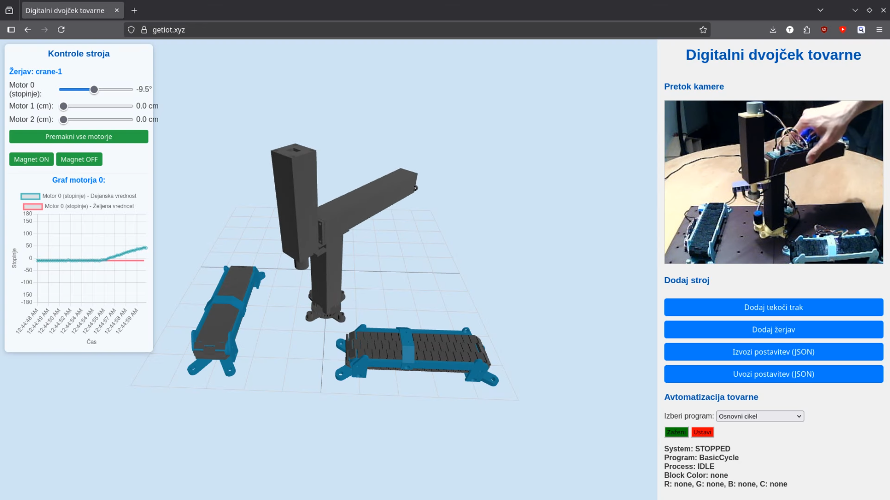
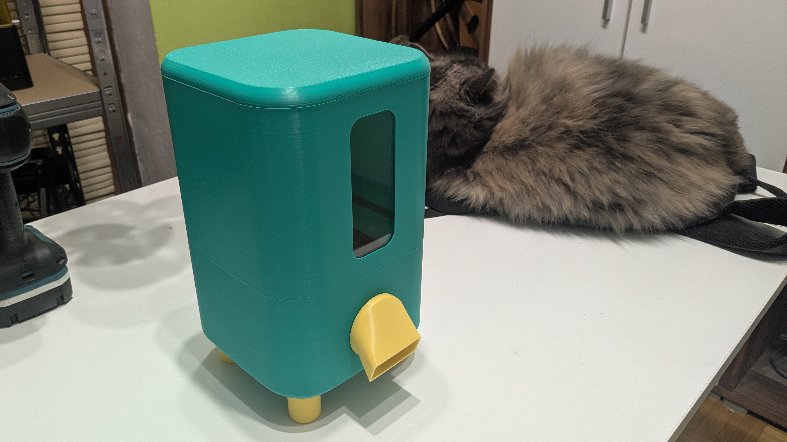
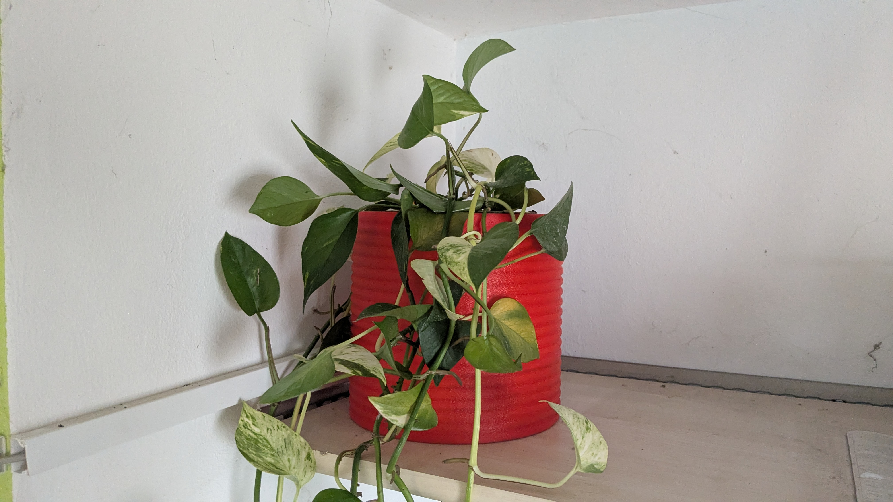
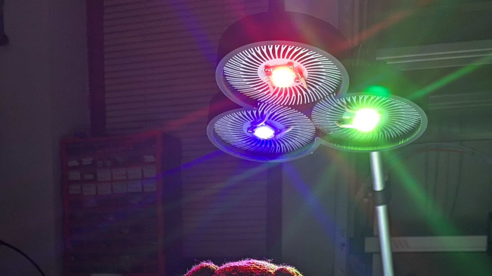
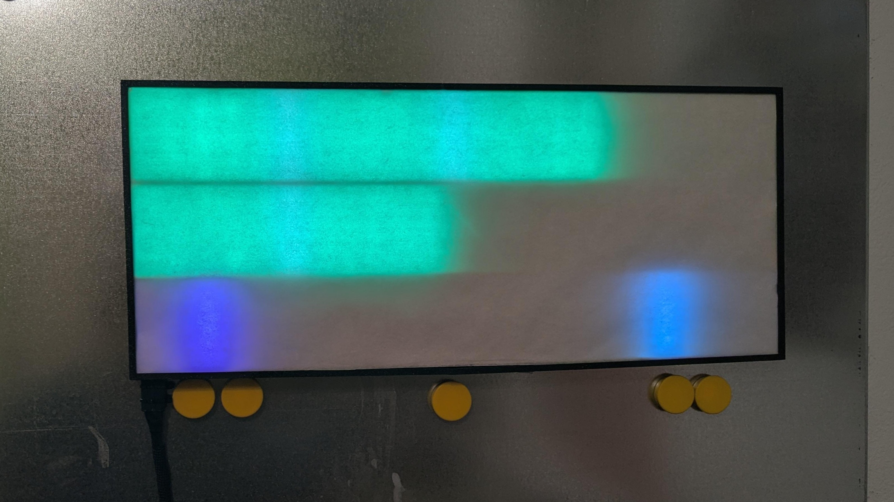

Povezovanje digitalnih sistemov
in fizičnih mehanizmov.
Sem magistrski študent Organizacije in managementa informacijskih sistemov (FOV). Moja strast so Industrija 4.0, internet stvari (IoT) in hitro prototipiranje. Sposoben sem načrtovanja mehanskih delov v programu Fusion 360, njihove integracije z elektroniko (ESP32, Raspberry Pi) in uporabe z umetno inteligenco podprtega razvoja za hitro izdelavo delujočih sistemov.
Izpostavljeni projekti

IoT Digitalni dvojček (Model tovarne)
Moj diplomski projekt: Miniaturna tovarna po načelih Industrije 4.0 s 3D tiskanim žerjavom, tekočimi trakovi in senzorji za prepoznavanje barv. Realnočasovno upravljanje preko MQTT, Raspberry Pi in Node.js nadzorne plošče.

Pametni hranilnik za živali
Avtomatski hranilnik, ki vsak dan ob enakih, v naprej določenih časih, poda dozo briketov. Uporablja ESP32, 3D tisk in RTC. Zaradi globokega spanja uporablja zelo malo energije.

ESPHome pametno korito za rastline
Avtomatiziran sistem za samodejno zalivanje, zgrajen z ESP32 in platformo ESPHome. Sistem spremlja vlažnost zemlje, sproži vodno črpalko le, ko je to potrebno, in pametno uporablja način "deep sleep" za varčevanje z energijo.

RGB senčna svetilka
Po meri izdelana svetilka, ki uporablja teorijo barv za ustvarjanje večbarvnih senc. Imam veliko praktičnih izkušenj ("hands-on") z delom s kompozitnimi in drugimi materiali: epoksi smolo, akrilom, betonom in lesom.

Manjši projekti in eksperimenti
Zbirka mojih manjših "tinkering" projektov: makro tipkovnice, hitpad krmilnik, pametna LED ura in digitalni zoetrope.
Stopimo v stik
Aktivno iščem študentsko delo v Sloveniji na področju IoT, razvoja in raziskav (R&D), aditivne proizvodnje (3D tiska) ali tehničnega prototipiranja. Delodajalcu prinašam edinstveno kombinacijo znanja iz upravljanja IT procesov in praktičnih inženirskih veščin.